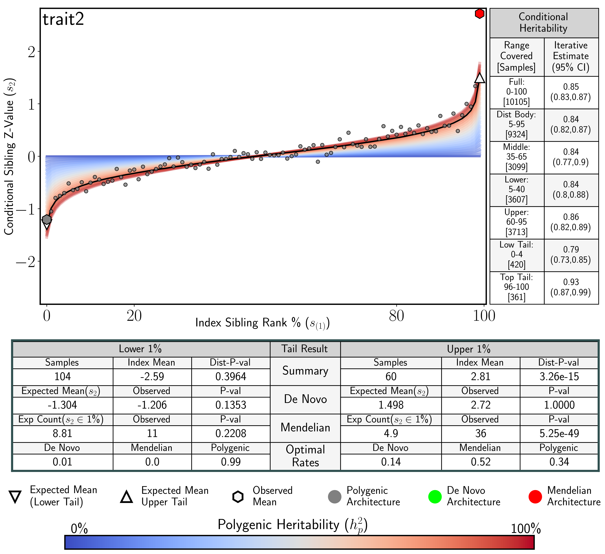

Interpreting SibArc Results
A trait with denovo tail architecture in both tails (denovoExample.fig.png)

Notice:
1. Evidence of De Novo architecture in both trait tails.
2. Lower heritability in both trait tails.
A trait with Mendelian tail architecture in both tails (mendelianExample.fig.png)

Notice:
1. Polygenic architecture in the lower tail, Mendelian heritability in the upper tail.
2. Increased heritability in the upper tail.